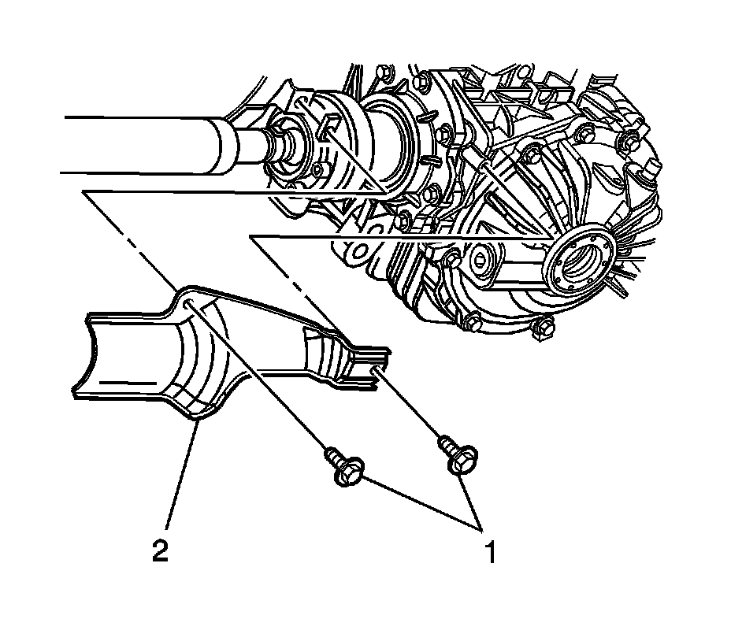

Shield Replacement
Shield Replacement
Removal Procedure

1. Raise and support vehicle. Refer to Lifting and Jacking the Vehicle (Service and Repair) .
2. Remove the front propeller shaft constant velocity (CV) joint shield bolts (1).
3. Remove the front propeller shaft CV joint heat shield (2).
Installation Procedure
1. Install the front propeller shaft CV joint heat shield (2) to the vehicle.
2. Inspect the front propeller shaft CV joint heat shield bolts (1). Replace if damaged or worn.
Notice: Refer to Fastener Notice (Fastener Notice) .
3. Install the front propeller shaft CV joint heat shield bolts (1).
Tighten the front propeller shaft CV joint heat shield bolts to 9 N.m (80 lb in).
4. Lower the vehicle.